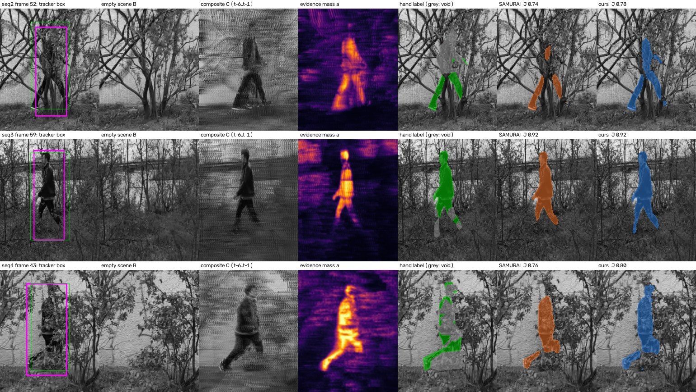
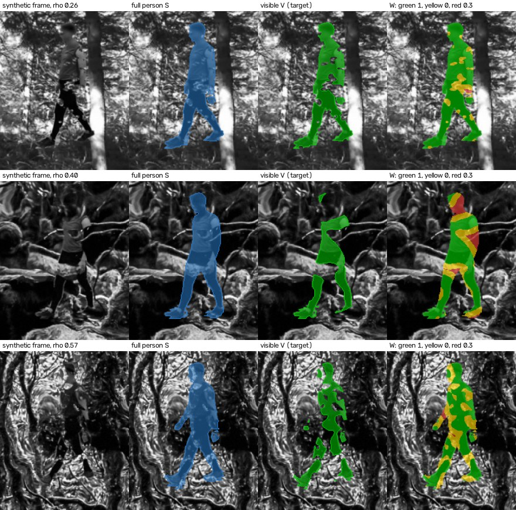
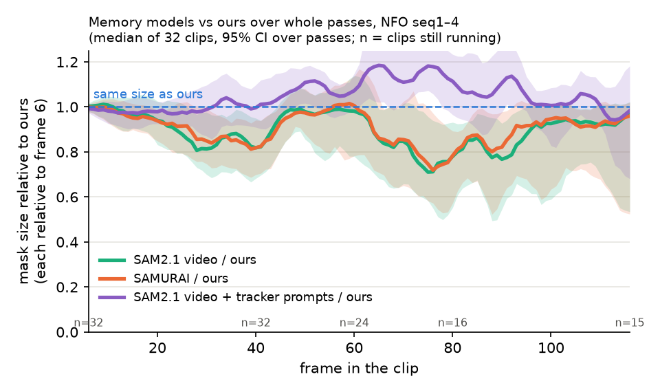
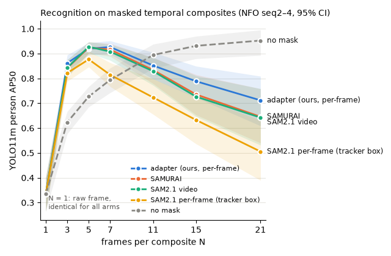

<title>Seeing Through Foliage</title>
<meta name="claude:viewport-fit-sides" content="cover">
<link rel="preconnect" href="https://fonts.googleapis.com">
<link rel="stylesheet" href="https://fonts.googleapis.com/css2?family=Bricolage+Grotesque:opsz,wght@12..96,500;12..96,700&family=IBM+Plex+Sans:ital,wght@0,400;0,600;1,400&family=IBM+Plex+Mono:wght@400;500&display=swap">
<style>
/* Layout: one reading column (~70ch) with wide figures breaking out to 1100px; tables and the diagram scroll in place. */
:root {
  --bg: #fbfcfb; --surface: #f0f3f1; --fg: #121614; --muted: #4f5a54; --rule: #d5ddd8;
  --leaf: #2f6b46; --ours: #2a78d6; --samurai: #d9622b; --warn: #a15c00; --bad: #b3261e;
  --frozen: #e6ebe8; --frozen-ink: #6b7570; --train: #dbe9fb;
  --display: "Bricolage Grotesque", "Segoe UI", system-ui, sans-serif;
  --body: "IBM Plex Sans", "Segoe UI", system-ui, sans-serif;
  --mono: "IBM Plex Mono", ui-monospace, Menlo, monospace;
}
@media (prefers-color-scheme: dark) { :root:not([data-theme="light"]) {
  --bg: #111513; --surface: #1a201d; --fg: #e8ede9; --muted: #a3b0a8; --rule: #2e3833;
  --leaf: #79c194; --ours: #5aa0ef; --samurai: #f08a57; --warn: #e3a33d; --bad: #f2867c;
  --frozen: #232b27; --frozen-ink: #93a099; --train: #1c2c42; color-scheme: dark } }
:root[data-theme="dark"] {
  --bg: #111513; --surface: #1a201d; --fg: #e8ede9; --muted: #a3b0a8; --rule: #2e3833;
  --leaf: #79c194; --ours: #5aa0ef; --samurai: #f08a57; --warn: #e3a33d; --bad: #f2867c;
  --frozen: #232b27; --frozen-ink: #93a099; --train: #1c2c42; color-scheme: dark }
body { background: var(--bg); color: var(--fg); font: 16px/1.6 var(--body); }
main { max-width: 1100px; margin: 0 auto; padding-block: 40px 80px;
  padding-left: max(16px, env(safe-area-inset-left, 0px)); padding-right: max(16px, env(safe-area-inset-right, 0px)); }
.col { max-width: 72ch; }
h1, h2, h3 { font-family: var(--display); text-wrap: balance; line-height: 1.15; margin: 0; }
h1 { font-size: clamp(2rem, 5vw, 3.1rem); font-weight: 700; letter-spacing: -0.01em; }
h2 { font-size: 1.6rem; font-weight: 700; margin-top: 56px; padding-top: 18px; border-top: 1px solid var(--rule); }
h3 { font-size: 1.12rem; font-weight: 500; margin-top: 28px; }
p, ul, ol { margin: 12px 0 0; }
li + li { margin-top: 4px; }
.eyebrow { font: 500 0.78rem var(--mono); letter-spacing: 0.08em; text-transform: uppercase; color: var(--leaf); }
.lede { font-size: 1.15rem; color: var(--muted); margin-top: 14px; }
.meta { font: 0.82rem var(--mono); color: var(--muted); margin-top: 14px; }
code, .mono { font-family: var(--mono); font-size: 0.86em; }
.claim { margin-top: 28px; padding: 18px 22px; background: var(--surface); border-left: 4px solid var(--leaf); }
.claim p:first-child { margin-top: 0; }
.nums { display: grid; grid-template-columns: repeat(auto-fit, minmax(210px, 1fr)); gap: 14px; margin-top: 20px; }
.num { padding: 14px 16px; border: 1px solid var(--rule); background: var(--bg); }
.num b { display: block; font: 700 1.7rem var(--display); color: var(--ours); font-variant-numeric: tabular-nums; }
.num span { font-size: 0.86rem; color: var(--muted); }
.num.tie b { color: var(--fg); }
figure { margin: 22px 0 0; }
figure img { display: block; width: 100%; height: auto; border: 1px solid var(--rule); }
figcaption { font-size: 0.88rem; color: var(--muted); margin-top: 8px; max-width: 80ch; }
.scroll { overflow-x: auto; margin-top: 16px; }
table { border-collapse: collapse; font-size: 0.9rem; font-variant-numeric: tabular-nums; min-width: 560px; }
th, td { text-align: left; padding: 6px 12px 6px 0; border-bottom: 1px solid var(--rule); vertical-align: top; }
th { font: 500 0.74rem var(--mono); letter-spacing: 0.05em; text-transform: uppercase; color: var(--muted); }
td.n, th.n { text-align: right; padding-right: 16px; }
tr.ours td { font-weight: 600; }
.swatch { display: inline-block; width: 10px; height: 10px; margin-right: 6px; vertical-align: 0; }
.eq { font-family: var(--mono); font-size: 0.92rem; background: var(--surface); padding: 12px 16px; margin-top: 12px; overflow-x: auto; white-space: pre; }
.tag { font: 500 0.72rem var(--mono); padding: 1px 6px; border: 1px solid currentColor; margin-left: 6px; }
.tag.m { color: var(--leaf); } .tag.a { color: var(--warn); }
.two { display: grid; grid-template-columns: repeat(auto-fit, minmax(300px, 1fr)); gap: 24px; }
.two > * { min-width: 0; }
.failed li { color: var(--muted); }
.failed li b { color: var(--fg); font-weight: 600; }
svg text { font-family: var(--body); fill: var(--fg); }
svg .small { font-size: 11px; fill: var(--muted); }
svg .lbl { font-size: 13px; font-weight: 600; }
svg .frozen { fill: var(--frozen); stroke: var(--rule); }
svg .frozen-t { fill: var(--frozen-ink); }
svg .train { fill: var(--train); stroke: var(--ours); stroke-width: 1.5; }
svg .input { fill: var(--surface); stroke: var(--leaf); stroke-width: 1.2; }
svg .arrow { stroke: var(--fg); stroke-width: 1.4; fill: none; }
svg .arrow-ours { stroke: var(--ours); stroke-width: 2; fill: none; }
svg .off { stroke: var(--frozen-ink); stroke-width: 1.2; fill: none; stroke-dasharray: 4 4; }
svg .cross { stroke: var(--bad); stroke-width: 2; }
</style>

<main>
<header class="col">
  <div class="eyebrow">Research status · NFO person segmentation · 25 October 2026</div>
  <h1>Seeing people through foliage with a frozen SAM2</h1>
  <p class="lede">A small adapter that gives SAM2's image model an empty-scene reference and a motion-aligned integral image of the last six frames. It tracks people behind dense foliage clearly better than SAMURAI and segments their visible parts slightly better, over whole crossings and without memory.</p>
  <p class="meta">Branch <span class="mono">vos-benchmark-pilot</span> · numbers measured on the data below unless marked otherwise · 95% CIs are paired bootstrap over clips (2,000 resamples).</p>
</header>

<section class="col">
  <div class="claim">
    <p><b>Current claim.</b> Over 32 whole crossings of the NFO sequences (seq1–4, every frame once), a per-frame layer adapter on frozen SAM2.1-b+, trained only on synthetic data, beats SAMURAI on tracking by +0.10 box AUC and on visible-pixel segmentation by a small but significant +0.03 hand J. It is on par on recognition. The result holds for each of 3 training seeds, and on the held-out seq2–4 alone.</p>
  </div>
  <div class="nums">
    <div class="num"><b>+0.099 ± 0.003</b><span>box AUC over SAMURAI (0.579 → 0.678), 3 seeds; each seed's CI excludes 0; seq2–4 alone +0.102 to +0.109</span></div>
    <div class="num"><b>+0.026 ± 0.004</b><span>hand-label J over SAMURAI (0.730 → 0.756) on all 43 hand-labelled frames (averaged per crossing; they fall in 19 of the 32), 3 seeds; each seed's CI excludes 0 → small lead</span></div>
    <div class="num tie"><b id="rec-num">+0.004 ± 0.005</b><span id="rec-span">YOLO person confidence on 5-frame recognition stacks over SAMURAI (0.663 → 0.667), 3 seeds; every CI includes 0 → on par (AP50 0.863 → 0.878)</span></div>
  </div>
</section>

<section class="col">
  <h2>1. The problem</h2>
  <p>In <b>NFO</b>, a fixed grayscale camera (800×600) films one person walking behind dense shrubs and branches. At any instant the body is visible only in fragments: a shoulder between two branches, a leg below a twig. We call this <i>fragmented occlusion</i>. The task is <b>modal</b> segmentation: mark the pixels where the person is actually visible, not the hidden body.</p>
  <ul>
    <li><b>Data.</b> Four sequences, seq1–4. Dense hand-drawn GT boxes (about 900 per sequence, whole person). Sparse hand masks of the visible pixels: 23 frames on seq2–4 (with a "void / unsure" class that is ignored) and 20 on seq1.</li>
    <li><b>Protocol: whole crossings.</b> One clip per pass of the person through the scene, from its first admissible start to the end of the pass: 32 clips of 44–155 frames, every frame used once. 8 are on seq1, which was used for checkpoint selection; 24 on seq2–4, the <b>single held-out test</b>. Headline numbers are over all 32, with seq2–4 alone reported alongside. Every method gets the standard semi-supervised VOS prompt at the first frame (GT box + one point) and runs causally from there. Following a person through a whole crossing is the realistic use, and it exposes memory drift that short clips hide (§6).</li>
    <li><b>Earlier protocol.</b> Until 2026-10-23 we scored 61 windows of 40 frames. Numbers in §4, §7 and §8 come from those windows and are marked so.</li>
  </ul>
</section>

<figure>
  
  <figcaption><b>What the adapter sees, and what comes out</b>, one hand-labelled frame from each test sequence, cropped around the person.
  Columns 1–4 are the inputs:
  (1) frame <i>t</i>, with our feature tracker's box in magenta and the GT box in green;
  (2) the empty scene, the median of person-free frames;
  (3) the integral image: frames <i>t</i>−6…<i>t</i>−1 shifted onto <i>t</i> by the tracker's motion and weighted by how much each pixel differs from the empty scene. Foliage blurs out and the person accumulates;
  (4) the integral image's evidence mass <i>a</i>.
  Columns 5–7 are the hand label (grey = void, ignored), SAMURAI's mask and ours. J is the single-frame IoU against the hand label.</figcaption>
</figure>

<section class="col">
  <h2>2. Methods compared</h2>
</section>
<div class="scroll"><table>
  <tr><th>id</th><th>what it is</th><th>memory</th><th>per-frame prompt</th></tr>
  <tr><td>B0</td><td>SAM2.1-b+ video predictor (Ravi et al. 2024, arXiv 2408.00714)</td><td>yes</td><td>no (t0 only)</td></tr>
  <tr><td>T1 · <span style="color:var(--samurai)">SAMURAI</span></td><td>SAM2 + Kalman motion-aware memory selection (Yang et al. 2024, arXiv 2411.11922). The strongest published baseline here.</td><td>yes</td><td>no</td></tr>
  <tr><td>trk</td><td>SAM2.1-b+ <i>image</i> predictor, run on every frame independently, prompted with our feature tracker's box + point</td><td>no</td><td>tracker box + point</td></tr>
  <tr class="ours"><td><span style="color:var(--ours)">ours</span> (adapter-pf)</td><td>trk + the layer adapter below (frozen SAM2, about 0.73 M trained parameters)</td><td>no</td><td>tracker box + corrected point</td></tr>
</table></div>
<section class="col">
  <p>The <b>feature tracker</b> is a fixed-size kernel at the t0 box size. On SAM2's stride-16 features it finds the position that maximises the change against the empty scene, 1 − cos(F<sub>t</sub>, F<sub>empty</sub>), and predicts motion with a Theil–Sen line over the last 12 frames (<span class="mono">adapter/tracker.py</span>). It runs with the adapter, not as an alternative to it.</p>
</section>

<section class="col">
  <h2>3. Architecture</h2>
  <p>SAM2 has two paths. The <b>video path</b> runs each frame through the image encoder, conditions it on a memory bank of past frames and their predicted masks (memory attention), decodes a mask, and writes the result back into memory. The <b>image path</b> is the same without memory. We use the image path, run per frame, and add an adapter that injects evidence the image encoder cannot see on its own: what the empty scene looks like, and where the recent frames changed against it.</p>
</section>

<div class="scroll" role="img" aria-label="Architecture diagram: SAM2 image path with a trained adapter injecting residuals into the frame features and correcting the point prompt; SAM2 memory modules unused.">
<svg viewBox="0 0 1080 520" width="1080" height="520" style="max-width:none">
  <defs>
    <marker id="ah" viewBox="0 0 10 10" refX="9" refY="5" markerWidth="7" markerHeight="7" orient="auto-start-reverse"><path d="M0,0 L10,5 L0,10 z" style="fill:var(--fg)"/></marker>
    <marker id="ahb" viewBox="0 0 10 10" refX="9" refY="5" markerWidth="7" markerHeight="7" orient="auto-start-reverse"><path d="M0,0 L10,5 L0,10 z" style="fill:var(--ours)"/></marker>
  </defs>
  <!-- legend -->
  <rect x="20" y="14" width="16" height="12" class="frozen"/><text x="42" y="25" class="small">frozen SAM2.1-b+</text>
  <rect x="160" y="14" width="16" height="12" class="train"/><text x="182" y="25" class="small">trained (ours, 0.73 M params)</text>
  <rect x="352" y="14" width="16" height="12" class="input"/><text x="374" y="25" class="small">input / derived from video, no learning</text>

  <!-- inputs -->
  <rect x="20" y="70" width="150" height="54" class="input"/><text x="32" y="93" class="lbl">frame t</text><text x="32" y="112" class="small">current image X</text>
  <rect x="20" y="150" width="150" height="70" class="input"/><text x="32" y="173" class="lbl">integral image C</text><text x="32" y="191" class="small">frames t−6…t−1, tracker-</text><text x="32" y="205" class="small">aligned, change-gated</text>
  <rect x="20" y="246" width="150" height="54" class="input"/><text x="32" y="269" class="lbl">empty scene B</text><text x="32" y="288" class="small">median of person-free frames</text>
  <rect x="20" y="326" width="150" height="54" class="input"/><text x="32" y="349" class="lbl">evidence mass a</text><text x="32" y="368" class="small">per-pixel Σ w·gate</text>
  <rect x="20" y="420" width="150" height="70" class="input"/><text x="32" y="443" class="lbl">feature tracker</text><text x="32" y="461" class="small">box + point at t</text><text x="32" y="476" class="small">(kernel on SAM2 features)</text>

  <!-- image encoder (shared, applied to X, C, B) -->
  <path d="M220,70 L330,100 L330,270 L220,300 Z" class="frozen"/>
  <text x="236" y="178" class="lbl frozen-t">image</text><text x="236" y="196" class="lbl frozen-t">encoder</text>
  <text x="228" y="318" class="small">same weights, run 3×</text>
  <line x1="170" y1="97" x2="218" y2="110" class="arrow" marker-end="url(#ah)"/>
  <line x1="170" y1="185" x2="218" y2="185" class="arrow" marker-end="url(#ah)"/>
  <line x1="170" y1="273" x2="218" y2="262" class="arrow" marker-end="url(#ah)"/>

  <!-- features -->
  <text x="352" y="96" class="small">F_X (strides 16 / 8 / 4)</text>
  <text x="352" y="186" class="small">F_C</text>
  <text x="352" y="262" class="small">F_B</text>
  <line x1="330" y1="105" x2="520" y2="105" class="arrow" marker-end="url(#ah)"/>
  <line x1="330" y1="192" x2="408" y2="192" class="arrow" marker-end="url(#ah)"/>
  <line x1="330" y1="268" x2="408" y2="268" class="arrow" marker-end="url(#ah)"/>
  <path d="M170,353 L380,353 L380,300 L408,300" class="arrow" marker-end="url(#ah)"/>

  <!-- adapter -->
  <rect x="410" y="160" width="250" height="160" class="train"/>
  <text x="424" y="182" class="lbl" style="fill:var(--ours)">layer adapter</text>
  <text x="424" y="202" class="small">per stride: [F_X, F_C, F_B, F_X−F_C, F_X−F_B, a]</text>
  <text x="424" y="218" class="small">(1×1 projections) → conv blocks,</text>
  <text x="424" y="234" class="small">coarse-to-fine 16 → 8 → 4</text>
  <text x="424" y="256" class="small">→ zero-initialised 1×1 conv: residual R</text>
  <text x="424" y="280" class="small">token head: prototype of F_C under a</text>
  <text x="424" y="296" class="small">→ zero-init MLP: correction δ, scaled by mass</text>

  <!-- residual add -->
  <circle cx="540" cy="105" r="13" style="fill:var(--bg);stroke:var(--ours);stroke-width:2"/>
  <text x="533" y="110" style="fill:var(--ours);font-weight:700">+</text>
  <line x1="540" y1="160" x2="540" y2="120" class="arrow-ours" marker-end="url(#ahb)"/>
  <text x="548" y="146" class="small" style="fill:var(--ours)">F_X + R</text>

  <!-- memory attention (unused) -->
  <rect x="590" y="66" width="120" height="78" class="frozen" style="opacity:.55"/>
  <text x="604" y="98" class="lbl frozen-t">memory</text><text x="604" y="116" class="lbl frozen-t">attention</text>
  <line x1="594" y1="70" x2="706" y2="140" class="cross"/><line x1="706" y1="70" x2="594" y2="140" class="cross"/>
  <path d="M553,105 C 575,40 735,40 758,92" class="arrow" marker-end="url(#ah)"/>
  <text x="610" y="48" class="small">bypassed: per-frame image path</text>

  <!-- prompt encoder -->
  <rect x="760" y="300" width="150" height="60" class="frozen"/>
  <text x="774" y="326" class="lbl frozen-t">prompt encoder</text><text x="774" y="345" class="small">box + point tokens</text>
  <path d="M170,455 L835,455 L835,362" class="arrow" marker-end="url(#ah)"/>
  <text x="560" y="448" class="small">tracker box + point (every frame)</text>
  <path d="M660,296 L735,296 L735,330 L758,330" class="arrow-ours" marker-end="url(#ahb)"/>
  <text x="664" y="288" class="small" style="fill:var(--ours)">point token + δ</text>

  <!-- mask decoder -->
  <rect x="760" y="70" width="150" height="70" class="frozen"/>
  <text x="774" y="100" class="lbl frozen-t">mask decoder</text><text x="774" y="119" class="small">frozen</text>
  <line x1="835" y1="298" x2="835" y2="144" class="arrow" marker-end="url(#ah)"/>

  <!-- output -->
  <rect x="950" y="76" width="112" height="58" class="input"/>
  <text x="962" y="100" class="lbl">mask at t</text><text x="962" y="118" class="small">visible pixels</text>
  <line x1="910" y1="105" x2="948" y2="105" class="arrow" marker-end="url(#ah)"/>

  <!-- memory encoder / bank (unused) -->
  <rect x="930" y="190" width="132" height="54" class="frozen" style="opacity:.55"/>
  <text x="942" y="213" class="lbl frozen-t">memory encoder</text><text x="942" y="231" class="small">+ memory bank</text>
  <line x1="934" y1="194" x2="1058" y2="240" class="cross"/><line x1="1058" y1="194" x2="934" y2="240" class="cross"/>
  <line x1="1006" y1="136" x2="1006" y2="188" class="off"/>
  <text x="930" y="266" class="small">not used: no mask is fed back,</text>
  <text x="930" y="281" class="small">so errors cannot compound</text>
</svg>
</div>

<section class="col">
  <h3>The integral image and its evidence mass</h3>
  <p>For target frame <i>t</i>, the six previous frames A<sub>i</sub> are shifted onto <i>t</i> by the tracker's horizontal motion. Each pixel gets a soft gate G<sub>i</sub> saying whether it differs from the empty scene B; the recent frames weigh more:</p>
  <div class="eq">z_i(x) = robust z-score of |A_i(x) − B(x)|          (median / 1.4826·MAD over the frame)
G_i(x) = σ( z_i(x) − θ_i ),  θ_i = max(3, 90th percentile of z_i)
w_i    ∝ exp(−age_i / τ),  τ = 3.5 frames
C(x)   = Σ w_i G_i(x) A_i(x) / Σ w_i G_i(x)        (plain weighted mean where Σ w_i G_i ≈ 0)
a(x)   = Σ w_i G_i(x) ∈ [0, 1]                       (evidence mass)</div>
  <p>Code: <span class="mono">adapter/integral_image.py: integral_image_and_mass</span>. The integral image is <b>open-loop</b>: it is built from pixels and the empty scene, never from the model's own past masks. That is the key difference from SAM2's memory. Section 6 explains why it matters.</p>

  <h3>Adapter internals</h3>
  <ul>
    <li><b>Feature fusion.</b> SAM2's encoder runs on X, C and B (same frozen weights). At each of the three strides (16, 8, 4) the adapter sees the three feature maps, their two differences and the evidence mass. Two conv layers per stride run coarse to fine, and a <b>zero-initialised</b> 1×1 conv outputs a residual R added to the frame's features. At step 0 the adapter is therefore exactly SAM2 (ControlNet-style initialisation; Zhang et al. 2023, arXiv 2302.05543).</li>
    <li><b>Prompt correction.</b> The decoder gets the tracker box and SAM2's own point embedding at the tracker position. A zero-initialised MLP adds a correction δ computed from the integral image's feature prototype under <i>a</i>, scaled by 1 − exp(−Σa/κ). With no evidence there is no correction.</li>
    <li><b>Size.</b> 730,401 trained parameters. The image encoder, prompt encoder and mask decoder are frozen. Inference cost per frame is up to three encoder passes (frame, integral image, empty scene; the last is the same for every frame of a sequence).</li>
  </ul>
</section>

<section class="col">
  <h2>4. Training data: synthetic people behind synthetic foliage</h2>
  <p>NFO has 43 hand-labelled frames, far too few to train on. We train only on synthetic clips where the visible mask is <b>exact</b>:</p>
  <ul>
    <li><b>People:</b> GPJATK walking sequences (person silhouettes S), with held-out subjects for validation.</li>
    <li><b>Occluders:</b> foliage layers cut from a tree photograph and Perlin-noise clumps. Occlusion density ρ ~ U[0.2, 0.6] (10% of clips unoccluded); clump size 12/24 px; per-frame flutter.</li>
    <li><b>Backgrounds:</b> the template photo or CanaTree100 images (every 5th held out). Scenes zoomed out at random (scale 0.5–1) towards NFO's smaller person (GPJATK person 0.53 of frame height, NFO 0.33).</li>
    <li><b>Exactly the test-time path:</b> the same tracker, integral image and encoder run on each synthetic clip. Integral-image parameters (history 4–8 frames, τ, gate) are randomised per clip. Clips are generated online, so the model never sees the same clip twice.</li>
  </ul>
</section>
<figure>
  
  <figcaption><b>Synthetic training frames</b> (validation clips). From left: the frame; the full person S; the visible target V; the loss weights W drawn on the frame. Green: visible person, weight 1. Yellow: hidden person within 8 px of a visible fragment, weight 0 (ignored). Red: hidden person far from any fragment, weight 0.3. Everything else is background with weight 1.</figcaption>
</figure>

<section class="col">
  <h3>The loss</h3>
  <p>p is the predicted probability per pixel, V the visible target, W the weight map above:</p>
  <div class="eq">L = 20 · FocalLoss_W(p, V; α = 0.67, γ = 2)  +  (1 − TI)^0.75

TI = (TP + 1) / (TP + 0.3·FP_W + 0.7·FN + 1)        (Focal Tversky; Abraham &amp; Khan 2019, arXiv 1810.07842)
TP = Σ p·V,   FP_W = Σ W·p·(1 − V),   FN = Σ (1 − p)·V</div>
  <ul>
    <li><b>Why the weights.</b> The hand annotators follow a "fill the small gaps" convention: a thin sliver of person between two leaves is marked void, not background. W = 0 next to visible fragments encodes that convention, so the model is not punished for bridging gaps the annotators would bridge too.</li>
    <li><b>Why recall-leaning</b> (FN costs 0.7, FP 0.3). We trained three variants. They rank in <b>opposite orders</b> on synthetic and on real data:</li>
  </ul>
</section>
<div class="scroll"><table>
  <tr><th>loss</th><th>FP / FN price</th><th>weights W</th><th class="n">synthetic J</th><th class="n">real hand J (seq2–4, 40-frame windows)</th><th>verdict</th></tr>
  <tr><td>simple</td><td>0.5 / 0.5</td><td>no</td><td class="n">0.737</td><td class="n">0.427 (seq1 selection frames; P 0.91, R 0.45)</td><td>misses half the person</td></tr>
  <tr><td>balanced</td><td>0.5 / 0.5</td><td>yes</td><td class="n">0.705</td><td class="n">0.735</td><td>too conservative (R 0.78)</td></tr>
  <tr class="ours"><td>v3.4 (used)</td><td>0.3 / 0.7</td><td>yes</td><td class="n">0.617</td><td class="n">0.761</td><td>best on real data</td></tr>
</table></div>
<section class="col">
  <p><b>Lesson:</b> synthetic visible masks are pixel-exact, so caution at leaf edges pays off there. Real foliage edges are blurry and the annotators bridge gaps, so caution costs recall. Synthetic data tells us whether the architecture works at all. It cannot set the precision/recall trade-off, which has to be chosen on real labels.</p>
</section>

<section class="col">
  <h2>5. How we evaluate</h2>
  <p>There is no dense visible-mask ground truth for NFO. We therefore measure three things with real ground truth, each with a stated blind spot:</p>
</section>
<div class="scroll"><table>
  <tr><th>metric</th><th>question</th><th>how</th><th>blind spot</th></tr>
  <tr><td>hand J / P / R</td><td>are the visible pixels right?</td><td>IoU against the hand masks that fall inside the crossings, void ignored</td><td>only 43 frames, in 19 crossings</td></tr>
  <tr><td>box AUC, P@20, P<sub>norm</sub></td><td>does it track?</td><td>LaSOT one-pass protocol, ported from SAMURAI's evaluation code; mask → tight box, as SAMURAI does; against the GT boxes</td><td>rewards extent: the tracker box alone scores 0.642</td></tr>
  <tr><td>recognition conf / AP50</td><td>does the mask keep the evidence a detector needs?</td><td>5-frame recognition stacks aligned by GT-box motion (identical for all methods); masked mean, unmasked pixels filled with the plain mean; YOLO11m person confidence and AP50. N = 5 is where SAM2.1 video and SAMURAI score best, i.e. their best case</td><td>uses GT motion; see the N sweep below</td></tr>
</table></div>

<section class="col">
  <h2>6. Results</h2>
  <h3>Main table (32 whole crossings, seq1–4)</h3>
</section>
<div class="scroll"><table>
  <tr><th>method</th><th class="n">hand J</th><th class="n">P / R</th><th class="n">box AUC</th><th class="n">recog conf</th><th class="n">recog AP50</th></tr>
  <tr><td>B0 · SAM2.1 video</td><td class="n">0.733</td><td class="n">0.89 / 0.80</td><td class="n">0.571</td><td class="n">0.666</td><td class="n">0.869</td></tr>
  <tr><td><span class="swatch" style="background:var(--samurai)"></span>T1 · SAMURAI</td><td class="n">0.730</td><td class="n">0.88 / 0.81</td><td class="n">0.579</td><td class="n">0.663</td><td class="n">0.863</td></tr>
  <tr><td>SAM2.1 video + tracker prompts (memory on)</td><td class="n">0.745</td><td class="n">0.82 / 0.88</td><td class="n">0.661</td><td class="n">0.636</td><td class="n">0.861</td></tr>
  <tr><td>trk · per-frame SAM2.1 + tracker</td><td class="n">0.685</td><td class="n">0.80 / 0.83</td><td class="n">0.628</td><td class="n">0.596</td><td class="n">0.814</td></tr>
  <tr><td>ours without integral image, 3 seeds</td><td class="n">0.740 ± 0.011</td><td class="n">0.88 / 0.81</td><td class="n">0.647 ± 0.009</td><td class="n">0.651 ± 0.003</td><td class="n">0.859 ± 0.010</td></tr>
  <tr class="ours"><td><span class="swatch" style="background:var(--ours)"></span>ours, 3 seeds (mean ± sd)</td><td class="n">0.756 ± 0.004</td><td class="n">0.86 / 0.85</td><td class="n">0.678 ± 0.004</td><td class="n">0.667 ± 0.005</td><td class="n" id="rec-cell">0.878 ± 0.000</td></tr>
</table></div>
<section class="col">
  <p class="meta">All masks computed on the same cluster, and every number in this table from one scoring run there (job 1950449, 2026-10-24): box AUC, hand J and one YOLO run over all arms. Absolute AP shifts between software versions, so compare within this table. Seeds 0–1 were trained in bf16, seed 2 in fp16. Held-out seq2–4 alone: box AUC 0.720 vs SAMURAI 0.615, hand J 0.768 vs 0.741 (23 frames), recognition conf 0.694 vs 0.687.</p>

  <h3>What each ingredient does (one variable at a time)</h3>
</section>
<div class="scroll"><table>
  <tr><th>ingredient</th><th>comparison</th><th class="n">hand J</th><th class="n">box AUC</th><th class="n">recognition conf</th></tr>
  <tr><td>tracker prompts, memory kept</td><td>video + tracker − SAM2.1 video</td><td class="n">+0.012 [−0.011, +0.036]</td><td class="n"><b>+0.089</b> [+0.062, +0.116]</td><td class="n">−0.029 [−0.054, +0.001]</td></tr>
  <tr><td>memory, on top of the tracker</td><td>video + tracker − trk</td><td class="n"><b>+0.060</b> [+0.014, +0.113]</td><td class="n">+0.033 [−0.004, +0.076]</td><td class="n"><b>+0.040</b> [+0.021, +0.061]</td></tr>
  <tr><td>motion prompt (tracker box + point every frame)</td><td>trk − SAMURAI</td><td class="n">−0.045 [−0.088, −0.010]</td><td class="n"><b>+0.049</b> [−0.013, +0.106]</td><td class="n">−0.067 [−0.101, −0.029]</td></tr>
  <tr><td>empty-scene cue in the adapter (3-seed mean)</td><td>adapter without integral image − trk</td><td class="n"><b>+0.055</b></td><td class="n">+0.019</td><td class="n"><b>+0.055</b></td></tr>
  <tr><td>motion-aligned integral image (3 seeds, mean ± sd)</td><td>adapter − adapter without integral image, per seed</td><td class="n"><b>+0.016 ± 0.009</b></td><td class="n"><b>+0.031 ± 0.010</b></td><td class="n"><b>+0.017 ± 0.007</b></td></tr>
</table></div>
<section class="col">
  <p>Reading: <b>the motion prompt buys tracking but costs precision; the empty-scene cue restores precision; the integral image adds real person evidence</b>. With tracker prompts, memory does help (hand J +0.060 over per-frame trk; job 1953256), but ours without memory stays above SAM2.1 video + tracker on every metric (box 0.678 vs 0.661, J 0.756 vs 0.745, recognition 0.667 vs 0.636; no paired CI for this pair). The empty-scene step is mostly precision (hand P 0.80 → 0.88), the integral-image step mostly recall (hand R 0.81 → 0.85), and recognition goes up with it, not just box extent. For the integral image every seed's box-AUC and recognition-confidence CI excludes 0, and hand J rises for every seed (+0.005, +0.020, +0.022; seed 0's CI includes 0). Its box gain is larger than on the 40-frame windows (+0.024), as expected if its benefit is staying on the person over long clips.</p>

  <h3>Over a whole crossing, memory masks shrink</h3>
</section>
<figure>
  
  <figcaption><b>The memory methods' caution sticks.</b> Per frame, mask area of SAM2.1 video and SAMURAI divided by ours (each normalised to frame 6), median over the 32 crossings, 95% band from a bootstrap over passes. From frame 30 to the end of the crossing their masks are ×0.76 [0.63, 0.89] (SAM2.1 video) and ×0.78 [0.66, 0.92] (SAMURAI) of ours; ours stay at their size (+1% per 10 frames [−1%, +3%]). It varies by crossing: a third lose more than 30%, a quarter end larger than ours. SAM2.1 video <i>with tracker prompts on every frame</i> (purple) does not shrink: ×1.00 [0.90, 1.11] of ours, so the shrinking comes from memory propagating the first prompt alone. Area is not recall, but with their precision-leaning profile (P 0.88–0.89, R 0.80–0.81) the lost pixels are likely person. Code: <span class="mono">eval/mask_fill.py</span>, NFO_RUN=fullpass.</figcaption>
</figure>
<section class="col">

  <h3>Runtime</h3>
  <p>Per frame, laptop RTX PRO 4000. <b>Ours: 61 ms. SAM2 video: 53 ms.</b> Each frame is encoded once and shared by the tracker, the adapter and the decoder; the integral image takes a second encoder pass; the empty scene is encoded once per sequence. The integral image and SAM2's preprocessing run on the GPU. SAM2 video spends its extra time on memory attention and the memory encoder instead, so the two designs cost about the same. Code: <span class="mono">adapter/inference.py: fast_masks</span>, <span class="mono">benchmark/nfo_vos/tools/timing.py</span>.</p>

  <h3>Recognition vs. the number of integrated frames (40-frame windows)</h3>
</section>
<figure>
  
  <figcaption><b>Temporal integration is what makes the person recognisable</b> (raw frame AP50 0.33). Masks help most at short integration. Per-frame SAM2 stops improving after N = 5, because its masks change shape from frame to frame and the average smears. Our adapter keeps pace with the video methods <i>without memory</i>. Beyond N ≈ 7 every masked recognition stack falls, while the unmasked mean keeps rising (0.95 at N = 21). With GT-aligned motion and long integration, plain averaging wins. N = 7 was fixed before any results; the headline now uses N = 5, the baselines' best point in this sweep (decided 2026-10-23, before the whole-crossing runs).</figcaption>
</figure>

<section class="col">
  <h2>7. Per-frame vs. video: what to expect, and why we do not use memory</h2>
  <p>The natural expectation is that SAM2's memory should help: the person was partly visible a moment ago, so remembering should fill in what is hidden now. Under fragmented occlusion the evidence says otherwise (hand J on the 40-frame windows, seq2–4, unless noted):</p>
  <ul>
    <li><b>Plain SAM2 video already beats plain per-frame SAM2</b> (B0 0.755 vs trk 0.716 hand J). Memory carries the object's extent from frame to frame.</li>
    <li><b>Our per-frame adapter matches or beats every video method</b> (0.760), without memory. Over whole crossings the gap widens: 0.756 vs 0.730–0.733, and the memory methods' masks shrink (§6).</li>
    <li><b>Whole crossings, memory + tracker prompts</b> (job 1953256): memory helps a tracker-prompted SAM2.1 (hand J 0.745 vs 0.685, recognition 0.636 vs 0.596) and stops the masks shrinking, but stays below the memory-free adapter (J 0.756, box 0.678 vs 0.661, recognition 0.667).</li>
    <li><b>Feeding SAM2's memory better masks does not beat the adapter.</b> Writing the adapter's own masks into memory: 0.763 (+0.002, n.s.). Writing the SAM2-ceiling labels (GT-box-prompted SAM2.1-L, non-causal): 0.756.</li>
    <li><b>Upper bound for any memory-conditioned read-out:</b> a perfect per-frame chooser between the adapter's output and the memory output gains only <b>+0.012</b> [+0.004, +0.021] hand J. A learned read adapter would get less.</li>
    <li><b>On synthetic clips with exact masks</b> (per-frame adapter trained with the balanced loss), the gain from writing <i>perfect</i> masks into memory over a per-frame adapter is +0.017, and it does not grow with occlusion density (+0.018 at ρ 0.2–0.4, +0.017 at ρ 0.4–0.7).</li>
  </ul>
  <p><b>Working principle:</b> <i>closed-loop</i> memory (the model's own past predictions) compounds errors under fragmented occlusion. Every wrong mask enters the bank and pulls the next frame towards it. <i>Open-loop</i> evidence (aligned past pixels against the empty scene) cannot compound, because it never contains a prediction. The adapter takes its temporal information from the open-loop side only.</p>
</section>

<section class="col">
  <h2>8. What did not work</h2>
  <p>One line each. Full list in <span class="mono">docs/vos_benchmark/nfo_failure_log.md</span>.</p>
  <ul class="failed">
    <li><b>Adapter inside SAM2's memory loop</b> (residual before memory attention): over-segments, hand J −0.031.</li>
    <li><b>Balanced / unweighted losses:</b> better synthetic J, worse real J (table in §4).</li>
    <li><b>SAM2-ceiling labels as a dense evaluation proxy:</b> they reverse the main ranking (SAMURAI 0.781 vs ours 0.718 against the proxy, 40-frame windows), because they share SAM2's bias. Usable only for non-SAM2 comparisons.</li>
    <li><b>Frozen pseudo-GT and integral-image-based labels</b> as stand-ins for the hand masks: J 0.62–0.69 against hand labels, too far off to rank methods.</li>
    <li><b>Depth cues</b> (gating by empty-scene disparity): raise precision ≤ 0.05 but cost more recall.</li>
    <li><b>Background fill in the recognition stack:</b> re-inserted sharp foliage. Replaced by the mean fill.</li>
  </ul>
</section>

<section class="col">
  <h2>9. Open questions and next steps</h2>
  <ol>
    <li><b>Second annotator</b> (CVAT tasks ready, seq2–4). This gives human agreement: if two people agree at J ≈ 0.78, both methods sit at the ceiling and "on par" is the strongest possible segmentation claim.</li>
    <li><b>Recognition with each method's own motion</b> instead of GT motion. With a real tracker, long-N averaging inherits tracking drift. That is where our +0.10 box AUC should turn into a recognition gain. This is the most promising next experiment.</li>
    <li><b>Why masked recognition stacks fall beyond N = 7:</b> seams between masked and filled regions, or misaligned limbs. A visual check is under way; if it's seams, a soft blend is a one-line change, tested on seq1 first.</li>
    <li><b>Memory only if new evidence demands it:</b> split the real frames by visible fraction and see whether the chooser's +0.012 concentrates in the most-occluded ones. This needs the second annotator's frames to have any power.</li>
  </ol>
</section>

<section class="col">
  <h2>Code map</h2>
</section>
<div class="scroll"><table>
  <tr><th>what</th><th>where</th></tr>
  <tr><td>repo guide: layout, data manifest, environments</td><td class="mono">CLAUDE.md</td></tr>
  <tr><td>test windows, native frames, hand labels</td><td class="mono">benchmark/nfo_vos/trials.py</td></tr>
  <tr><td>adapter model, loss, training</td><td class="mono">benchmark/nfo_vos/adapter/fusion_adapter.py (+ .sbatch)</td></tr>
  <tr><td>synthetic training batches, loss weights</td><td class="mono">benchmark/nfo_vos/adapter/fusion_data.py, synth/</td></tr>
  <tr><td>feature tracker</td><td class="mono">benchmark/nfo_vos/adapter/tracker.py</td></tr>
  <tr><td>integral image + evidence mass</td><td class="mono">benchmark/nfo_vos/adapter/integral_image.py</td></tr>
  <tr><td>NFO per-frame inference (tracker, integral image, adapter)</td><td class="mono">benchmark/nfo_vos/adapter/inference.py</td></tr>
  <tr><td>baselines SAM2.1 video / SAMURAI</td><td class="mono">benchmark/nfo_vos/baselines/run_sam2_video.py (+ .sbatch)</td></tr>
  <tr><td>mask dumps for our arms</td><td class="mono">benchmark/nfo_vos/eval/dump_arms.py (+ .sbatch)</td></tr>
  <tr><td>box metrics / recognition / results table</td><td class="mono">benchmark/nfo_vos/eval/{box_metrics, recognition, report}.py</td></tr>
  <tr><td>cluster smoke test / runtime</td><td class="mono">benchmark/nfo_vos/tools/{remote_smoke, timing}.py</td></tr>
  <tr><td>findings (constructive) / failure log</td><td class="mono">docs/vos_benchmark/nfo_vos_pilot_findings.md · nfo_failure_log.md</td></tr>
  <tr><td>this page's figures</td><td class="mono">benchmark/nfo_vos/tools/briefing_figures.py, eval/recog_vs_N.py</td></tr>
</table></div>
</main>
